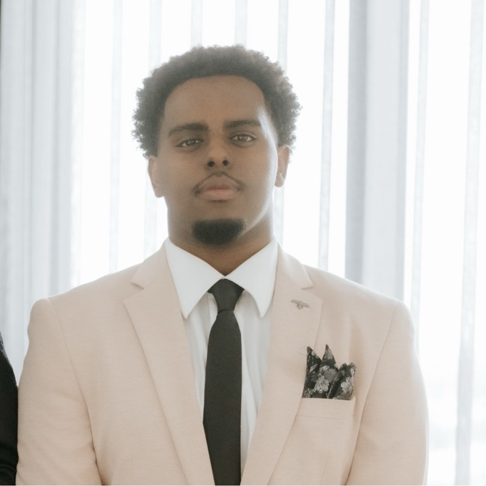

Mechanical & Mechatronics Engineer — Sydney, Australia
Ahmed
Ahmed
Where analysis meets software
Structural fatigue, FEA and thermofluids alongside Python, C++ and real-time control implementation.
◦ Optional — drop a photograph at images/hero.jpg
01 · Profile
Penultimate
year.

images/portrait.jpg 4:5 portrait · 1200 × 1500 workshop.jpg
workshop.jpg
Mechanical & Mechatronics Engineering student at the University of Technology Sydney, currently designing hydraulic services at a Sydney consultancy. Strongest where engineering analysis meets software.
What I keep returning to is building the thing other people end up using. In practice that has meant a schematic sizing tool, written after watching the same calculation done by hand across project after project, which is now part of how the design team works. In the lab it has meant leading a four-person hardware team from schematic to a validated prototype.
Consulting is where I learned to notice a repeatable process and fix it. I want to apply that instinct to product design, automation and embedded systems — in teams where engineers are expected to improve the tools they work with, not simply operate them.
02 · Curriculum vitae
Education
Curriculum
vitae.
University of
Technology Sydney
2023 — Expected 2027
Bachelor of Engineering (Honours), Mechanical & Mechatronics.
- High Distinction — Applied Mechanics & Design B; Mathematics 2
- Distinction — Sensors & Control for Mechatronic Systems; Thermofluids A; Designing Sustainable Engineering Projects
- Warman Track Challenge — UTS MDFS, 2024. Designed and assembled an omni-directional Arduino robot for an automated track challenge, programming its motion control in C for precision calibration within a small margin for error
- Assistant football coach — Sharara Sport, 2022. Ran structured training sessions for local youth, focused on skill development and teamwork
03 · Curriculum vitae
Technical skills
Capability.
Engineering analysis and software, kept deliberately close together.
- Programming — Python, C, C++, JavaScript, MATLAB
- CAD & analysis — AutoCAD, SolidWorks, Revit, Bluebeam, FEA
- Tools & frameworks — OpenCV, ROS, Altium Designer, Next.js, Supabase, Git & GitHub
- Engineering — structural & fatigue analysis, thermofluids, PCB design & validation, embedded firmware, computer vision, closed-loop control, hydraulic design
- Professional — technical communication, team leadership, process optimisation, stakeholder engagement
04 · Experience
Role 01 — Current
Undergraduate
Hydraulic
Engineer.
Goldfish & Bay
Feb 2026 — Present
Preparing hydraulic services designs and documentation across concept, tender and construction phases under the direction of senior engineers.
- Calculations, drawings, markups and design revisions to a review-ready standard, working to Australian Standards and compliance requirements
- Site inspections of new and existing buildings, assessing installed systems against design intent and compliance obligations
- Identified a slow, error-prone manual sizing process and independently built an internal schematic sizing tool now used by the team
05 · Experience
Role 02
Sales
Consultant &
Samsung Elite
Rep.
Optus
Jul 2024 — May 2026
Delivered technical product demonstrations following Samsung Elite certification, translating detailed specifications into clear customer benefits.
- Mentored team members on product knowledge and troubleshooting, reducing ramp-up time for new starters
- Consistently exceeded monthly sales targets and maintained CRM data used for lead tracking and pipeline forecasting
06 · Experience
Role 03
Business
Development
Consultant.
Chandler Macleod
Oct 2023 — May 2024
Conducted market research and outbound business development, qualifying and pitching tailored recruitment solutions to decision-makers nationwide.
- Coordinated with recruiters nationally to communicate client requirements and ensure a smooth handover from sales to service delivery
- Used CRM software to document client interactions, track activity and generate reports for management
07 · Selected work
Project 01
Robotic
Visual
Servoing.
 images/projects/ibvs-01.jpg
3:2 landscape · 1600 × 1067
images/projects/ibvs-01.jpg
3:2 landscape · 1600 × 1067
 ibvs-02.jpg
ibvs-02.jpg
An image-based visual servoing system letting a Universal Robots UR3 manipulator track a target in real time, through an eye-in-hand Intel RealSense D435 RGB-D camera.
- Vision pipeline in Python with OpenCV and pyrealsense2 — checkerboard detection with sub-pixel corner refinement, median-filtered depth estimation and image-space error feeding the interaction matrix
- IBVS control law mapping camera-frame velocity to joint velocities through the Jacobian pseudo-inverse, driving the robot over a ROS bridge in closed loop at 15–20 Hz
- Diagnosed latency in the original MATLAB and WSL architecture and migrated to native Python, then tuned control gain, velocity smoothing and joint limits for stable convergence without oscillation
08 · Selected work
Project 02
PCB-Based
Step
Tracker.
A custom PCB step tracker built by a four-person team I led, coordinating mechanical, electronics and firmware workstreams against a fixed delivery timeline.
- Designed the power regulation subcircuit end to end in Altium Designer — reverse-polarity protection, 5 V and 3.3 V LDO rails, decoupling and thermal dissipation — validating both rails within ±5% under dynamic load
- Authored the step detection firmware in C++ with startup calibration, hysteresis thresholding on acceleration magnitude and circular-buffer cadence computation; 94% step-count accuracy over a 100-step walking test
- Carried the board from schematic through layout to fabrication and bench testing, passing design rule verification with zero violations
09 · Selected work
Project 03
Onboarding
& Competency
Platform.
 images/projects/onboarding-01.jpg
3:2 landscape · 1600 × 1067
images/projects/onboarding-01.jpg
3:2 landscape · 1600 × 1067
 onboarding-02.jpg
onboarding-02.jpg
A modular web application structuring engineering onboarding into staged competency tracks with objectives, checklists and curated technical references.
- Migrating the platform to Next.js and Supabase to add authentication and a queryable progress database, so time-to-competency can be measured directly rather than estimated
- Now the basis for the online onboarding learning modules I proposed and am leading at Goldfish & Bay, producing structured technical content for incoming engineers
10 · Internship reflection
Question 01
What I
expected.
The question
What were your expectations about your internship before you joined?
I expected an undergraduate role to be mostly observational.
I pictured myself marking up drawings, chasing redlines and learning software while the real engineering happened somewhere above me. Hydraulic services, I assumed, would be a narrow and rules-driven discipline: look up the standard, apply the table, move on.
I also expected the work to be solitary and almost entirely technical, with little exposure to clients, architects or contractors until much later in my career.
11 · Internship reflection
Question 02
What it
actually
was.
The question
What was the reality? How was it different from your expectations?
The reality was faster and far more collaborative than I anticipated.
Within three weeks I was working on live projects with real deadlines and real cost consequences, and my work was reviewed and used rather than filed away as practice.
Two things surprised me most. The first was how much of building services engineering is coordination: a drainage route is rarely constrained by hydraulics alone, but by structure, ceiling space, fire services and what the builder can practically install. The second was how much judgement sits behind the standards. AS/NZS 3500 sets the floor, but choosing between compliant options requires reasoning about buildability, maintenance and cost that no table gives you.
The other departure from my expectations was how much room there was to improve the process itself. I noticed the team repeating the same sizing calculations manually across projects, so I built a hydraulic sizing tool that automated the calculation and checked it against the standard. It was adopted by the team and is now used on live jobs. I have since proposed, and am leading, the firm's internal onboarding modules to shorten ramp-up time for new starters.
12 · Internship reflection
Question 03
Three
lessons.
The question
What lessons were the most important from your internship? Why were they important?
Three lessons have stayed with me.
The first is that engineering value comes from reducing uncertainty for other people. A calculation is only useful when it lets a colleague, a client or a builder make a decision confidently. That reframed how I document and communicate my work: the deliverable is not the number, it is a number somebody else can rely on.
The second is that initiative is welcomed when it is grounded in a real problem. I did not have permission to build the sizing tool. I had a problem I understood well enough to solve, and I validated it against the standard before proposing it. That sequence — understand, validate, then propose — is a repeatable approach rather than a one-off.
The third is professional judgement: knowing when to make a call and when to escalate. Early on I over-escalated, taking questions to senior engineers that I had the information to answer myself. Over time I learned to bring a recommendation rather than a question, which respects their time and makes my own reasoning reviewable.
13 · Internship reflection
Question 04
I build
things that
get used.
The question
After your workplace experience, what would you say your value proposition would be to an employer? How can you demonstrate this?
I combine engineering fundamentals with programming.
That is my value proposition: I can not only produce a compliant design, but automate and standardise the process behind it. Most graduates arrive able to do one or the other. The combination is where I am useful, because it turns a single correct answer into a method the whole team can reuse.
I can demonstrate this concretely. The hydraulic sizing tool was identified, built and validated by me, and is now part of how the design team works. I proposed the firm's onboarding modules and am now leading their development, to bring new engineers up to speed faster. Outside the consultancy, I led a four-person team through a PCB project from schematic to validated prototype, reaching 94% step-count accuracy over a 100-step test and passing design rule verification with zero violations, and I rebuilt a robotic visual servoing system from MATLAB to native Python to hold a stable 15–20 Hz control loop.
Each of those is verifiable, and each followed the same pattern: understand the problem properly, build something that works, then prove that it works.
14 · Internship reflection
Question 05
Where I
am headed.
The question
How did your internship influence the type of role in which you are interested?
It confirmed that my strength sits between engineering and systems.
Before this role I assumed I would have to choose between design engineering and software. The internship showed me they are not alternatives. The most valuable thing I did there was not a calculation — it was noticing that a calculation was being repeated by hand, and removing that repetition for everyone.
That has pushed me toward product design, automation and embedded systems, and toward organisations where engineers are expected to improve the tools they work with rather than simply operate them.
Hydraulic services is not where I expect to spend my career, but it is where the instinct came from. Working to Australian Standards under review has taught me a rigour I intend to carry into whatever I build next.
15 · Cover letter
Application
Cover
letter.
Addressed to
Graduate Recruitment Team
Industrus Engineering
Re: Industrus Engineering Graduate Program — Mechanical and Mechatronic Engineering
September 2026
Applying to the Industrus Engineering Graduate Program.
Dear Graduate Recruitment Team,
I am writing to apply for a place in the Industrus Engineering Graduate Program. I am a penultimate-year Bachelor of Engineering (Honours) student in Mechanical and Mechatronic Engineering at the University of Technology Sydney, expecting to graduate in 2027, and I currently work as an Undergraduate Hydraulic Engineer at Goldfish & Bay, a Sydney engineering consultancy.
I am drawn to Industrus because your projects sit where engineering analysis meets digital technology, which is where I do my best work. Using digital tools to plan and restore transport access after a natural disaster is exactly the kind of problem I want to work on. A rotational program would also let me build on my consulting experience across a wider range of divisions, supported by the structured training and mentoring your program offers.
Below, I address each selection criterion with an example from my professional, academic and project experience. In keeping with professional confidentiality, I describe this work without naming clients or projects.
16 · Cover letter
Criterion 3.1
Work others
can rely on.
Selection criterion
A commitment to ethical conduct and the highest standards of professional accountability.
I treat every calculation as something another person will rely on.
At Goldfish & Bay, the hydraulic services designs I prepare are used on live projects with real cost consequences, and they must comply with Australian Standards, including AS/NZS 3500. I work under the direction of senior engineers, and my responsibility is to make sure that every calculation, drawing and markup I hand over is one they can rely on.
I prepare my work to a review-ready standard, checking it against the relevant standards and compliance requirements before I submit it. On site inspections, I assess installed systems against design intent and compliance obligations. When I automated a recurring sizing calculation, I validated the tool against the standard before proposing it to the team, rather than introducing it into project work on my own authority. Consistent with the Engineers Australia Code of Ethics, I represent my competence honestly and escalate decisions that need senior judgement.
As a result, my work has been reviewed and used on live projects since my third week in the role, and the sizing tool is now relied on by the design team.
17 · Cover letter
Criterion 3.2
Across
disciplines.
Selection criterion
Demonstrated ability to effectively communicate both with other engineers and with stakeholders from different fields.
I translate technical detail for whoever needs to act on it.
As a Samsung Elite certified Sales Consultant at Optus from 2024 to 2026, I regularly explained complex technical products to customers with no technical background. My task was to turn detailed specifications into information each customer could use to make a confident decision.
I built my product demonstrations around what each customer needed rather than around the specification sheet. I also mentored colleagues on product knowledge and troubleshooting, so that the whole team could explain products clearly.
I consistently exceeded my monthly sales targets, and the new starters I mentored came up to speed more quickly.
I now use the same skill with engineers and other disciplines at Goldfish & Bay. A drainage route is rarely constrained by hydraulics alone, so I work through each problem from the perspective of structure, ceiling space, fire services and what the builder can practically install. Earlier, at Chandler Macleod, I communicated client requirements to recruiters nationally so that each handover from sales to service delivery ran smoothly.
18 · Cover letter
Criterion 3.3
Improving
the process.
Selection criterion
The ability to engage with a creative, innovative and proactive environment.
I notice repeated problems and build the fix.
At Goldfish & Bay, I noticed the design team repeating the same schematic sizing calculations by hand from project to project, a process that was slow and prone to error. I had not been asked to change it, but I understood the problem well enough to solve it.
I independently built an internal schematic sizing tool that automates the calculation and checks the result against the standard. I validated it before proposing it, so the team could adopt it with confidence rather than on trust.
The tool was adopted and is now part of how the design team works on live projects. The same approach led me to propose the firm's online onboarding modules, which I am now leading, to shorten the time new starters take to become productive. I want to keep working in an environment that welcomes this kind of initiative, and I see that environment at Industrus.
19 · Cover letter
Criterion 3.4
Organising
information.
Selection criterion
Demonstrated ability to use and manage information.
I turn scattered knowledge into structure that can be measured.
Much of what a new engineer needs to learn is spread across standards, reference documents and the experience of senior staff, which makes it hard to know how quickly someone is progressing. I set out to organise that information so that onboarding could be structured and its progress measured.
I designed and built a web application that divides engineering onboarding into staged competency tracks, each with objectives, checklists and curated technical references. I am now migrating it to Next.js and Supabase, adding authentication and a queryable progress database so that time-to-competency can be measured directly rather than estimated.
The platform now forms the basis of the online onboarding modules I proposed and am leading at Goldfish & Bay.
I apply the same discipline to technical data. In my robotic visual servoing project at UTS, I filtered noisy depth readings and refined image features to sub-pixel accuracy so that a 15–20 Hz control loop acted only on reliable information. In earlier commercial roles, I maintained CRM records used for lead tracking, forecasting and management reporting.
20 · Cover letter
Criterion 3.5
Owning my
performance.
Selection criterion
The ability to manage your own performance in a professional environment.
I improve by reflecting on how I work, not only on what I produce.
When I started at Goldfish & Bay in February 2026, I was also studying and, until May 2026, working at Optus. Early in the role, I noticed that I was taking questions to senior engineers that I already had the information to answer. I needed to become more independent without lowering the quality of my work.
I changed my approach. Before escalating an issue, I now work it through and bring a recommendation with my reasoning rather than an open question. That habit makes my reasoning easy to review and respects the time of the engineers who check my work.
I now make routine decisions with confidence and reserve escalation for questions that genuinely need senior judgement. Across my degree, I have maintained a credit average (WAM 70.1), with High Distinctions in Applied Mechanics and Design B and Mathematics 2, while working alongside my studies since 2023.
21 · Cover letter
Criterion 3.6
Leading
a team.
Selection criterion
A demonstrated ability to work as part of a team and to show leadership when required.
I lead from inside the technical work.
In the Embedded Mechatronics Studio at UTS in 2025, my four-person team had to deliver a custom PCB step tracker against a fixed timeline. As team lead, I was responsible for coordinating the mechanical, electronics and firmware workstreams while contributing my own technical work.
I coordinated the three workstreams against the delivery timeline and took ownership of two critical areas myself. I designed the power regulation subcircuit in Altium Designer, including reverse-polarity protection, 5 V and 3.3 V LDO rails and decoupling, and I wrote the step detection firmware in C++.
We carried the board from schematic through layout, fabrication and bench testing. It passed design rule verification with zero violations, held both supply rails within ±5% under dynamic load and achieved 94% step-count accuracy over a 100-step walking test.
I also lead less formally when a team needs it: by mentoring new starters at Optus, as an assistant youth football coach at Sharara Sport, and now by leading the development of onboarding modules at Goldfish & Bay.
22 · Cover letter
Close
In
closing.
Ahmed
Ahmed
Sydney · September 2026
Thank you for considering my application.
Each of these examples follows the same pattern: understand the problem properly, build something that works, then prove that it works. I would welcome the opportunity to bring that approach to the Industrus Engineering Graduate Program, and to learn from the breadth of projects across your divisions.
My resume is included in this portfolio. I would be glad to discuss my application further and can be contacted at Ahmedsqrdd@gmail.com or +61 479 088 469.
Yours sincerely,
Ahmed Ahmed
23 · Contact
Open to
2027
graduate
roles.
Happy to talk about hydraulic services design, robotics, embedded work, or anything sitting between mechanical analysis and software.